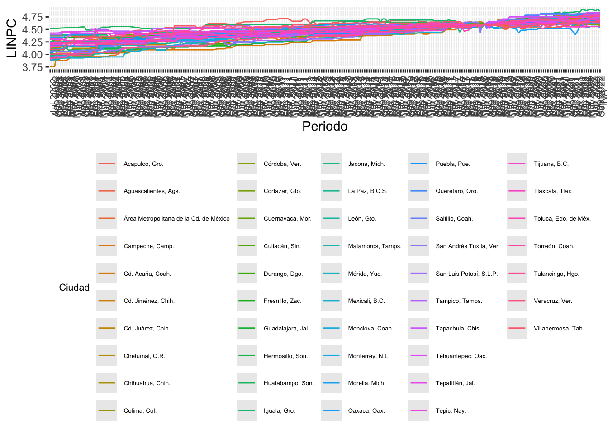

Chapter 12 Plot
Data %>%
ggplot( aes(x = Periodo, y = LINPC, group = Ciudad, color = Ciudad )) +
geom_line() +
theme(legend.title = element_text(color = "black", size = 8),
legend.text = element_text(color = "black", size = 5 )) +
theme(legend.position="bottom") +
theme(axis.text.x = element_text( size = 8, angle = 90))